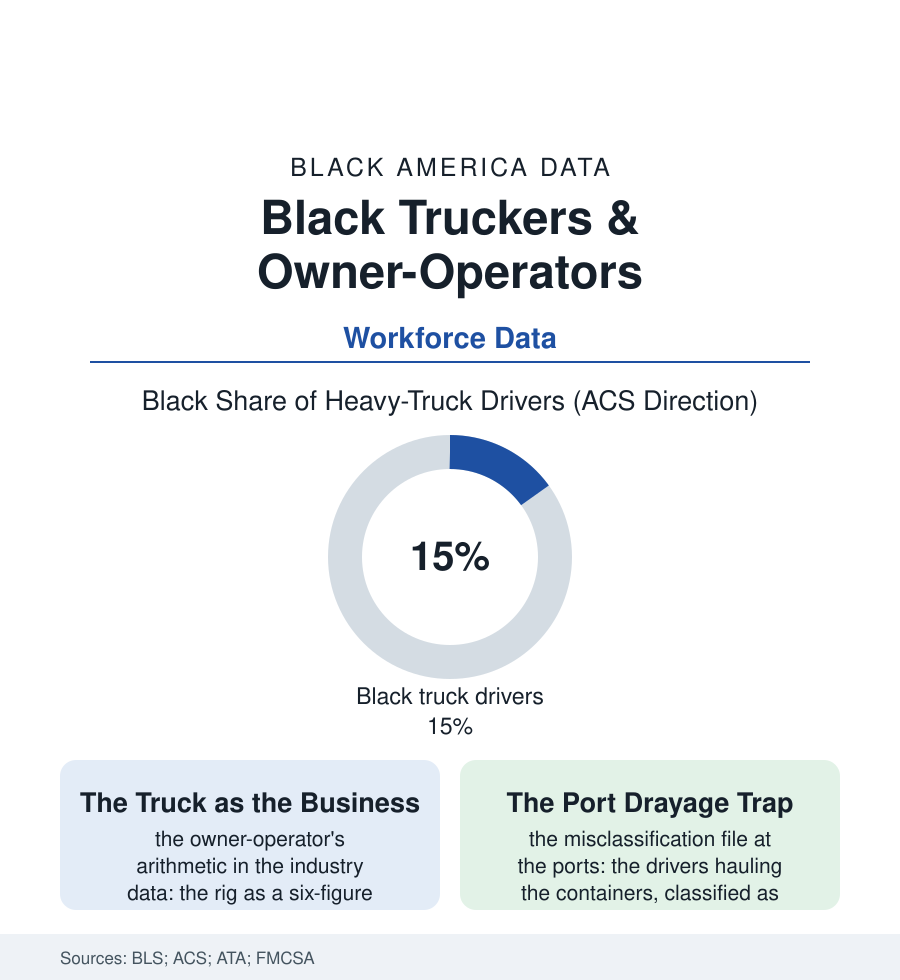

Black Employment
The Long Haul: Black Truckers and the Owner-Operator Dream
One trucker in seven is Black — in an industry whose solo owner-operator was the original small businessman of the highway, and whose freight now moves on contracts written elsewhere. The trucking file.

The trucker occupies a singular place in the Black working imagination: the man (and increasingly the woman) whose office moves, whose boss is a contract, whose asset — the rig — sleeps in his own yard. Roughly one heavy-truck driver in seven in America is Black, and the occupation has served for three generations as the working class's most accessible road to something like ownership. This article reads the trucking file.
The Road as the Ladder
The industry's structure made the opening: the CDL as a license-to-earn obtainable in weeks without a record the screening file could hold against a young man (the trucking schools' pipeline from the neighborhoods of this atlas being one of the labor market's genuine short ladders), the driving academies of the carriers themselves, the military's truck regiments feeding the highway as they feed the flight deck. The mid-century file is the prosperity file: the union company driver of the regulated era — the Teamster's wage the blue-collar summit beside the plant's — and deregulation's great restructuring (the 1980 act's aftermath in the wage data: the union density collapsing, the rates following, the industry's center of gravity shifting to the nonunion truckload carriers and the owner-operator) rewrote the Black trucker's deal along with everyone's, the independence arriving as the rates were cut. The modern owner-operator's arithmetic is the file's core document: the rig bought at six figures on the credit file's terms, the fuel and the insurance (the new entrant's premiums a wall of their own), the freight found on the load boards whose spot rates swing like commodities, the brokers' margins between the shipper's price and the driver's — the solo trucker as the supply chain's shock absorber, the economy's flexibility purchased with his sleep, his maintenance deferred, his rate unnegotiated. The port chapters write the model's indictment: the drayage drivers of the great harbors, in the investigations' account, classified as independent while leased to their own dispatchers, the truck payments and the dispatch fees consuming the gross in the documented cases to below the wage floor the classification avoided — the labor file's classification wars fought, at the ports, substantially by Black and immigrant drivers whose organizing drives are the modern file's live chapter.
The Cab's New Century
The forward data pull in three directions at once: the driver shortage's perennial headline (the industry's turnover near ninety percent at the big truckload carriers — a churn the wage data explain better than the recruiting posters do), the technology file's cab (the electronic logging mandate's discipline — the hours-of-service clock made digital, splitting the workforce between those who praise its safety and those who mourn the logbook's old flexibilities — and the autonomous truck's pilots on the desert corridors, the occupation's long automation horizon approaching first, as always, at the freight's most predictable miles), and the ownership frontier's new instruments (the Black trucking associations' load-matching and factoring networks, the fleet-building playbooks of the social-media era — the 'buy a truck, hire a driver' gospel preached to the community's aspiring owners at a scale the seminar data document, its failure rows running beside its success stories in the repossession data of the rate crash years). The health file takes its cut in the cab: the long-haul body's ledger — the sleep apnea of the health file's own screening rules, the metabolic rows of the truck-stop diet, the life expectancy studies' stark figures — the road's price collected, as in the railroad file, from the worker's own frame. What survives the arithmetic is the thing the file opened with: the truck as the rare asset a working man can own outright, the paid-off rig in the yard as the family's second house — the owner-operator of the third generation, dispatching two trucks from a kitchen table in a city of this atlas, standing as the occupation's honest advertisement: the road is hard, the rates are rigged, and the deed to the means of production fits, uniquely in this economy, in a driveway.
Reading the Trucking Data
The trucking file is the employment section's rolling chapter: the ladder, the leverage, and the logbook. The BLS publishes the headcount. The paid-off rig — parked, polished, and owned — publishes the thesis, in chrome, at the end of somebody's street.
More in Black Employment
The Black Unemployment Rate: The Two-to-One Pattern
Black unemployment runs at roughly twice the White rate — 5.5 percent against 3.3 percent in annual averages — a ratio stable across five decades of federal data. How it is measured and why it persists.
Black Median Weekly Earnings: The 80-Cent Ratio
Black full-time workers earn a median of about $900 a week — roughly 80 cents for every dollar White workers earn. The BLS earnings data by group, gender, and occupation.
Black Labor Force Participation: Working at National Rates
Black labor force participation runs at roughly the national rate — and Black women participate at higher rates than White women. The BLS participation data.
Source: U.S. Bureau of Labor Statistics and Census ACS occupation data; American Trucking Associations; National Minority Trucking Association; Federal Motor Carrier Safety Administration data.